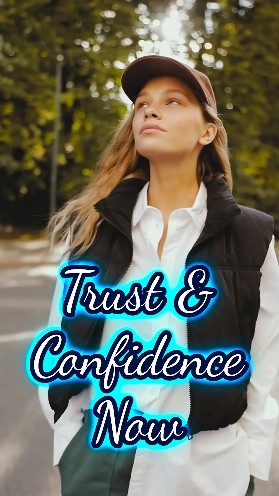
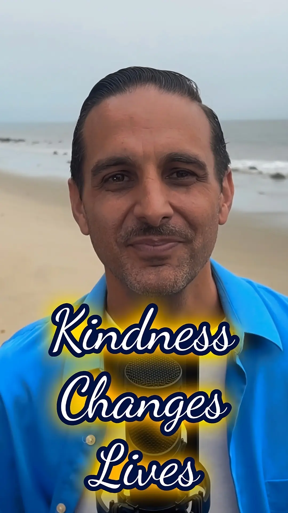

Reels | Shorts
-
 5Ô∏è‚É£ TINY HABITS That Will Change ü´µ Life #PROVEN
5Ô∏è‚É£ TINY HABITS That Will Change ü´µ Life #PROVEN
Transform your life with five simple micro-habits designed to boost energy, focus, and positivity. Discover how small daily changes can lead to significant personal and professional growth.
-
 ✨ Kindness Can Create Magic ✨
✨ Kindness Can Create Magic ✨
Discover the Ripple Effect of Kindness: ①ne small act of kindness can create ripples that touch countless lives. From a smile to a moment of patience, your actions matter more than you know.
-
 Why ü´µ Lost Without Self-Awareness üß≠
Why ü´µ Lost Without Self-Awareness üß≠
Why is self-awareness crucial for personal growth? Explore how understanding yourself can be the key to making intentional decisions that align with your true passions & values.
-
This Simple Act Can Change the World üåç
Unlock the power of kindness in 40 seconds. Explore how small acts—like a simple smile or a thoughtful word—can create ripples that impact countless lives. Your actions can spark a wave of positivity in the world.
-
 The Secret to Building Self-Trust üîë
The Secret to Building Self-Trust üîë
In this personal story, I share how a friend struggled with inner confidence and trustworthiness and how small changes transformed his life. Keeping promises to yourself builds self-trust.
-
 üåä This 1 Habit Transforms Your Life üåä
üåä This 1 Habit Transforms Your Life üåä
When you build trust from within, it creates a ripple effect that transforms your life. Explore how inner trust radiates outward, enhancing relationships, career growth, and self-confidence.
-

Build Trust & Confidence: 3️⃣ Easy Steps
Inner trust is the foundation of confidence & success. Discover 3 actionable steps to build self-trust and create a ripple effect of trustworthiness in your relationships and career.
-
How Love & Attention Spark Growth | #hope
In under 30 sec, explore how giving attention & love to something that seems to be fading can bring it back to life. Anything neglected can be revived with attention and love.
-
 The Secret Power of Small Kindness
The Secret Power of Small Kindness
Discover the transformative power of small acts of kindness in this clip about cultivating a mindset of kindness. Create positive ripples that change lives including your own!
-

Kindness Ripples: Your Power to Transform
Unlock the power of kindness in under 90 seconds! Kindness creates ripples that spread positivity! Discover how small acts, like a smile or kind word, transform lives—including yours.
-
 3 Secrets to Knowing Yourself Better
3 Secrets to Knowing Yourself Better
Unlock self-awareness with three tools: ① Journaling ② Mindfulness ③ Feedback. Temet Nosce tips show how understanding yourself can transform your relationships, career, and personal growth.
-
 Mindset Secrets for Better Decisions | Dr. Phelps
Mindset Secrets for Better Decisions | Dr. Phelps
The CEO of the Cialdini Institute explains how mindset shapes daily decisions. Learn how a calm, focused state can set you up for success. Influence and persuasion principles from the full episode.
-
The Secret to Making People Say Yes | Dr. Phelps
Revealing the Commitment-Consistency Principle and how framing choices boosts influence ethically. Perfect for leadership and business.
-
 Miss, Swing, Hit: Life's Grit in Action
Miss, Swing, Hit: Life's Grit in Action
Watch Gabriel's son learn resilience through Tee Ball. A missed pitch leads to triumph, teaching that failure is a step to success. Inspiring parents and kids to embrace challenges & grow.